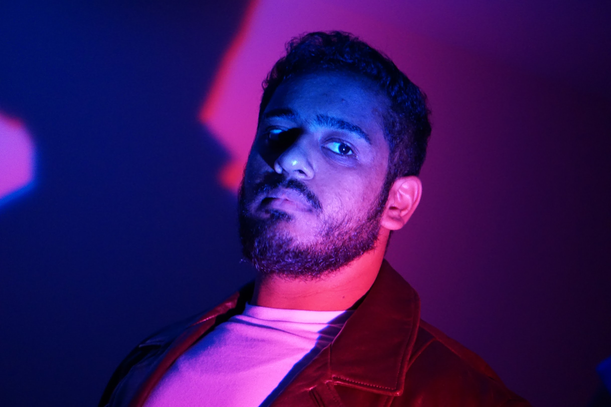
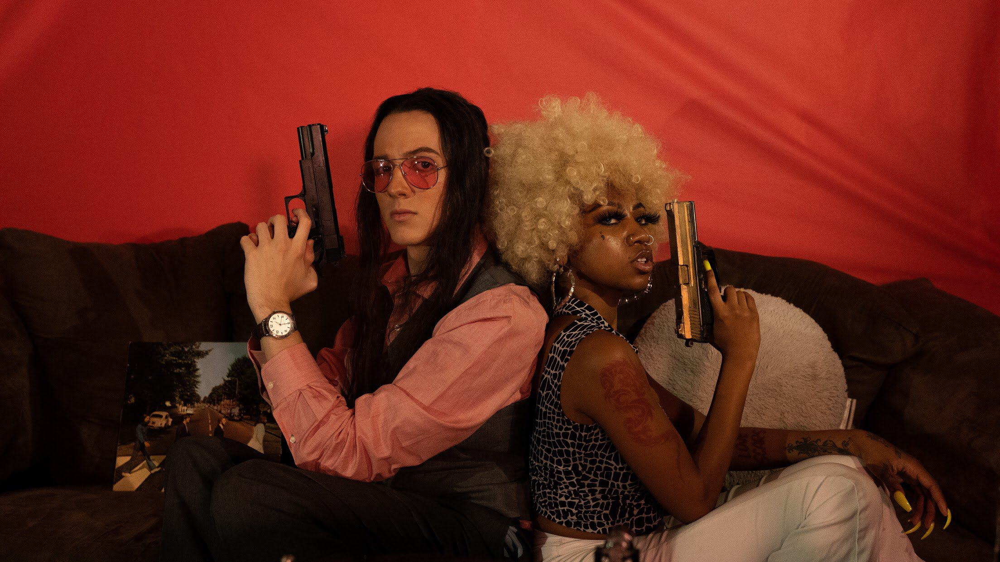
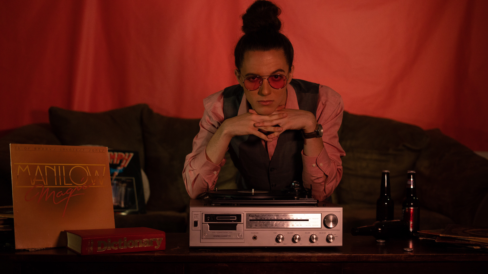

Portfolio Sections
Photo Shoots
Sound Designs
Video Projects
Bio
Ivan Zapata
Contact Information:
Phone number: 301-437-1010
Email:
Ivanzapata712@gmail.com
LinkedIn:
https://www.linkedin.com/in/ivan-zapata-65b3a319b/

Photo Shoots
Album: Dante's Retreat
Album: Milk & Honey


Sound Design Projects
Dinosaur Roar Sound Design
Your browser does not support the video tag.
Robot Sound Design
Your browser does not support the video tag.
Video Projects
◀ Previous
Your browser does not support the video tag.
Next ▶